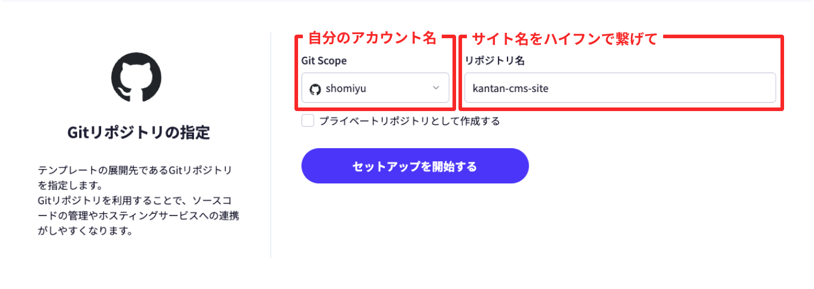
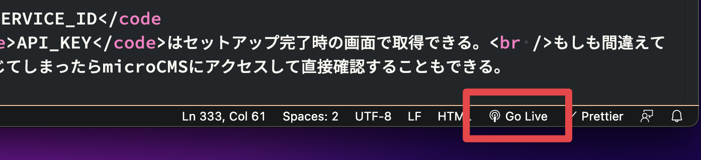

コードエディタはVisual Studio Code（以下 VSCode）を前提に
ローカルサーバを立ち上げるのに
Live Serverプラグインを使用する。
事前にインストールしておこう。
-
- テンプレートのセットアップ
-
microCMSテンプレートにアクセスしよう。
「このテンプレートを利用」のボタンで次のページに進み、GitHubと連携を行おう。
連携時の設定は全てデフォルトでOK。以下の画像を参考に必要な項目の設定を行う。
ソースコードをオンラインで公開したくない場合は、「プライベートリポジトリとして作成する」にチェックを入れて次に進もう。 GitHub連携後の設定 問題なければセットアップが完了して、microCMSのサービスとGitHubのリポジトリが自動で作成されているはず。
この画面の内容は後ほど使うのでまだ閉じないでおこう。
-
- ソースコードの準備
-
セットアップ完了画面に表示されているGitHubのページに移動して、ファイルをダウンロード・解凍しよう。
VSCodeのアプリアイコンにフォルダごとドラッグ＆ドロップするとプロジェクトをエディタで開くことができる。
Live Serverの拡張機能が入っていてフォルダごと開いていれば、VSCodeの右下に「Go Live」というリンクが出るので、こちらをクリックしてローカルサーバを立ち上げよう。
 Live Serverを立ち上げる ローカルサーバ起動中はmicroCMSとの通信が可能となり、コードの更新も自動で反映されるので、開発時は基本的に立ち上げておく必要がある。
-
- microCMSと連携
-
/assets/js/microcms.template.jsというファイルがあるので、ファイルごとコピーしてファイル名をmicrocms.template.jsからmicrocms.jsに変更しよう。microcms.jsを開き、SERVICE_IDとAPI_KEYを入力して保存すれば完了だ。SERVICE_IDとAPI_KEYはセットアップ完了時の画面で取得できる。
もしも間違えて画面を閉じてしまったらmicroCMSにアクセスして直接確認することもできる。
-
- カスタマイズ
-
持ち前のHTMLとCSSでサイトを自由にカスタマイズしよう。
新しいページを作ったり、好きな色にしたり、好きなレイアウトに変えたり、もちろんテキストを変えるだけでも。全体のカラーなどは
/assets/css/foundation/theme.cssの値を変えるだけでサイト全体に適用される。お問い合わせフォームの導入やその他のカスタマイズはコラムで紹介しているので、必要であれば見てほしい。
-
- コンテンツの入稿・動作確認
-
microCMSから記事を投稿してきちんと表示されるか確認しよう。
お問い合わせフォームの送受信テストやメタ情報周りの設定確認も忘れずに。使用する外部フォームサービスによってはサーバーアップ後に送受信できるものもあるので、その場合はリリース後に確認しよう。
-
- リリース
-
ここまできたらいよいよ公開だ。
サーバーはなんでも良いけどオススメはNetlifyやVercel。英語のサイトでジンマシンが出る人もいるかもしれないけど、小さいサイトであれば基本的にはずっと無料で使える。
もちろん、すでに契約中のサーバーにFTPでアップロードしてもOK。
-
おめでとう、サイトの完成だ。
だけどこれは終わりの始まり。たくさん運用して育ててほしい。